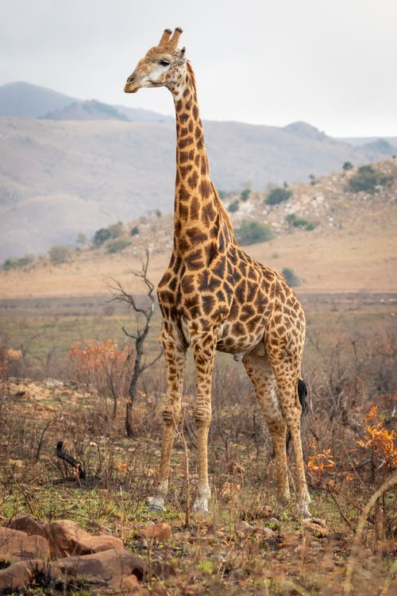
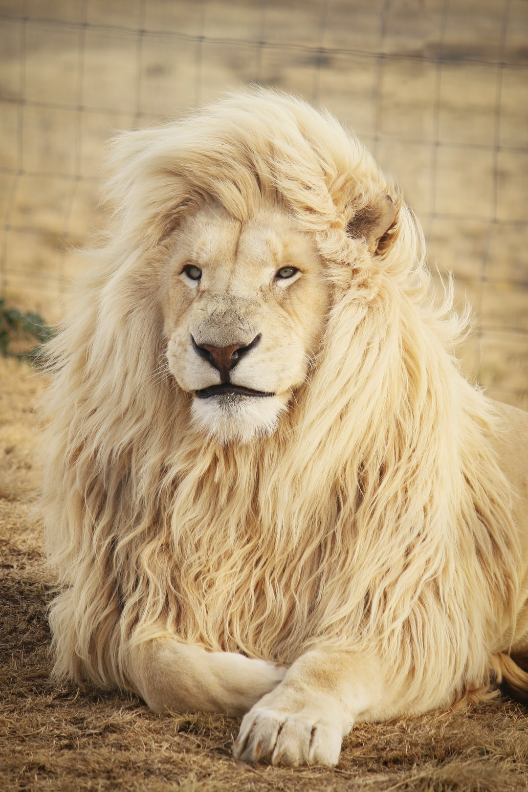
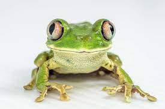
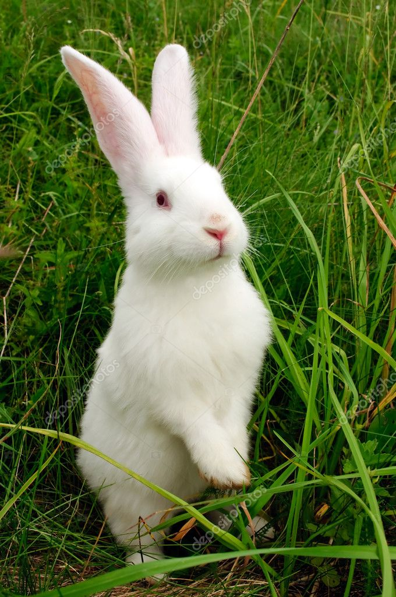

Tap on the Camel Image to see how to make a simple camel with help of a paper and a little guidence
Tap on the Giraffe Image to see how to make a simple camel with help of a paper and a little guidence
It's pretty difficult to create a lion , ut i am sure that youy can do it
It's the king of the jungle , simple meaning danger ⚠️⚠️⚠️
Be careful while using this , its very jumpy and can jump anywhere out ⚠️⚠️⚠️⚠️⚠️⚠️⚠️

animal with stripes on it's body, nature is really great if not disturbed!
If we are good to nature then nature is best for us but if we are bad ti it then it's the worst for us as done in the present situation of the pendamic(covid-19 as a threat for compleate humanity).
The most cute having very long ears animal hvaing springs in place of legs ➰